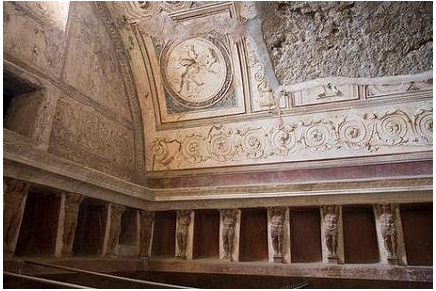
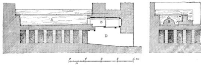
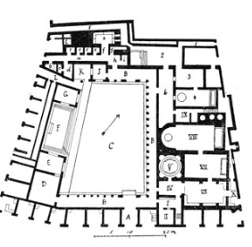
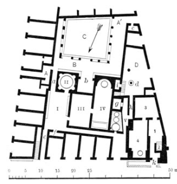

The baths or thermae of Pompeii represented the ultimate luxury, decorated with intricate stucco and frescos (shown in source 1). To an outsider looking into Roman society it may be hard to understand the value of the baths, as baths are something we can do daily, however within Roman society a trip to the thermae provided opportunities for socialising, physical care and comfort. Silmar to going to a cafe today. So far four baths have been discovered within the city, the Stabian Baths, Forum Baths, Central Baths and Sarno Baths. At the time of the eruption only the Forum Baths and Sarno Baths were functioning as the Stabian Baths were under repair and the Central Baths were still under construction.
Source 1: Stucco decoration in Forum Baths
While the baths of Pompeii differed greatly in size and scale, the thermae all featured similarities in design, including the presents of palaestra (exterice yard), apodyterium (changing room), frigidarium (cold bath), tepidarium (warm room for transition between frigidarium and caldarium) and caldarium (hot room with a heated bath, alverus).
Bradley describes the baths ‘[opening] midday after the furnaces had been lit’ with ‘an afternoon visit [becoming] a daily routine’. However Bradley also describes that ‘the discovery of hundreds of lamps in the Forum Baths and Stabian Baths’, suggesting that these baths were open during the day and at night, a testament to their popularity.
Source 2: Bath heating system Key: A. Bath basin, alveus. B. Bronze heater. C. Hot air chamber under the floor. D. Hot air flue.
Source 2 shows the heating system employed within the baths of Pompeii. The particular source is from the women's caldarium in the Stabian Baths. As shown within the diagram, the caldarium (demoted by A) is above furnace/bronze heater (B), heating the water of the caldarium whilst hot air could be used to heat other areas, such as the tepidarium. Interestingly, Mau states ‘In earlier times the rooms were heated by means of braziers’, providing evidence for the upgrade of baths within the city.
The Stabian Baths, its name given from its location on Stabian Street, is described by Mau as ‘The largest and oldest bathing establishment at Pompeii’. Compared to the Forum and Central Baths the Stabian Baths occupy an irregular shape, as can be seen in source 3. Mau states that ‘[the Stabian Baths were] remodelled in the early days of the Roman colony, and afterwards underwent extensive repairs.’, providing reason for the irregular shape.
Source 3: Stabian Baths Key: A. Main Entrance. B. Colonnade. C. Palaestra. F. Swimming tank. I-VIII. Men's Baths. IV. Anteroom. V. Frigidarium. VI. Apodyterium. VII. Tepidarium. VIII. Caldarium. IX. Furnace room. 1-6. Women's baths. 1, 5. Entrances. 2. Apodyterium. 3. Tepidarium. 4. Caldarium.
Entering from the main entrance (A) Pompeians would be greeted with the Palaestra (C) and surrounding Colonnade (B). The Stabian Baths featured a large palaestra intended for exercise and games, as Mau states “Two heavy stone balls were found here, which were obviously used in a game resembling the modern ninepins.”. Interestingly the baths featured an open air swimming tank (F).
The Forum baths were both smaller and simpler than the Stabian Baths, shown in Source 4.
Source 4: Forum Baths Key: A, A'. Street entrances to court. B. Colonnade. I-IV. Men's baths. I. Apodyterium. II. Frigidarium. III. Tepidarium. IV. Caldarium. V. Furnace room. C.Palaestra. D. Court back of women's baths. 1-4. Women's baths. 1. Apodyterium. 2. Basin for cold baths. 3. Tepidarium. 4. Caldarium. d. Sundial.
Aside from floor plan, the major differences between the Stabian Baths and Forum baths lie within the Palaestra (C). Unlike the Stabian Baths the palaestra was much smaller, suggesting that may not have been used as an ‘intensive’ exterice space, but instead a place a walk or contemplation like a peristyle. Due to the smaller nature of the Palaestra, no swimming tank was featured.
The Central Baths and Sanro Baths were the smallest within the city, however they were not significantly different from either the Stabina or Forum Baths. It should be noted however that their limited capacity suggests that they were built for men only, given womens inequity regarding other public assets such as the theatres.